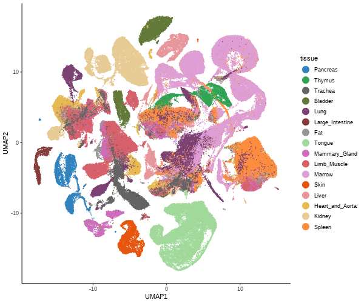

This is an R/ExperimentHub package providing easy access to bulk and single-cell RNA-seq data from the Tabula Muris Senis project. The package is under submission to Bioconductor. For now, it can be installed from this GitHub repository using the devtools package:
devtools::install_github("fmicompbio/TabulaMurisSenisData")Note that R version 4.1 or newer, and Bioconductor release 3.14 (current devel version) or newer are required to use the package.
Available data
The package provides access to the bulk RNA-seq data as well as the droplet and FACS single-cell RNA-seq data sets from the Tabula Muris Senis project. Each data set is returned as a SingleCellExperiment object. For the single-cell data sets, we also provide separate objects for the individual tissues (droplet and FACS, respectively). No additional analysis has been performed on the data.
Bulk RNA-seq
The bulk RNA-seq data is accessed via the TabulaMurisSenisBulk() function.
(tms_bulk <- TabulaMurisSenisBulk())## snapshotDate(): 2021-06-21
## see ?TabulaMurisSenisData and browseVignettes('TabulaMurisSenisData') for documentation
## loading from cache
## see ?TabulaMurisSenisData and browseVignettes('TabulaMurisSenisData') for documentation
## loading from cache
## see ?TabulaMurisSenisData and browseVignettes('TabulaMurisSenisData') for documentation
## loading from cache
## class: SingleCellExperiment
## dim: 54352 947
## metadata(0):
## assays(1): counts
## rownames(54352): 0610005C13Rik 0610006L08Rik ... n-TSaga9 n-TStga1
## rowData names(8): source type ... havana_gene tag
## colnames(947): A1_384Bulk_Plate1_S1 A1_384Bulk_Plate3_S1 ...
## P9_384Bulk_Plate2_S369 P9_384Bulk_Plate3_S369
## colData names(19): Sample name title ... __alignment_not_unique organ
## reducedDimNames(0):
## mainExpName: NULL
## altExpNames(0):
## List available tissues
table(tms_bulk$organ)##
## BAT Bone Brain GAT Heart
## 54 55 56 56 54
## Kidney Limb_Muscle Liver Lung Marrow
## 55 54 55 55 54
## MAT NA Pancreas SCAT Skin
## 56 14 56 56 51
## Small_Intestine Spleen WBC
## 55 56 55Droplet scRNA-seq
The droplet scRNA-seq data is accessed via the TabulaMurisSenisDroplet() function. By default, the full data set will be returned. Data from each individual tissue can also be obtained by specifying the tissues argument appropriately. Note that the return value from this function is always a named list, with one element per retrieved tissue (or ‘All’ for the full data set).
(tms_droplet <- TabulaMurisSenisDroplet(tissues = "All"))## snapshotDate(): 2021-06-21
## see ?TabulaMurisSenisData and browseVignettes('TabulaMurisSenisData') for documentation
## loading from cache
## require("rhdf5")
## see ?TabulaMurisSenisData and browseVignettes('TabulaMurisSenisData') for documentation
## loading from cache
## see ?TabulaMurisSenisData and browseVignettes('TabulaMurisSenisData') for documentation
## loading from cache
## see ?TabulaMurisSenisData and browseVignettes('TabulaMurisSenisData') for documentation
## loading from cache
## see ?TabulaMurisSenisData and browseVignettes('TabulaMurisSenisData') for documentation
## loading from cache
## $All
## class: SingleCellExperiment
## dim: 20138 245389
## metadata(0):
## assays(1): counts
## rownames(20138): Xkr4 Rp1 ... Sly Erdr1
## rowData names(6): n_cells means ... highly_variable varm
## colnames(245389): AAACCTGCAGGGTACA-1-0-0-0 AAACCTGCAGTAAGCG-1-0-0-0 ...
## 10X_P8_15_TTTGTCATCGGCTTGG-1 10X_P8_15_TTTGTCATCTTGTTTG-1
## colData names(15): age cell ... louvain leiden
## reducedDimNames(2): PCA UMAP
## mainExpName: NULL
## altExpNames(0):
listTabulaMurisSenisTissues(dataset = "Droplet")## [1] "All" "Large_Intestine" "Pancreas" "Trachea"
## [5] "Skin" "Fat" "Thymus" "Liver"
## [9] "Heart_and_Aorta" "Mammary_Gland" "Bladder" "Lung"
## [13] "Kidney" "Limb_Muscle" "Spleen" "Tongue"
## [17] "Marrow"The returned objects contain also the reduced dimension representations generated by the Tabula Muris Senis consortium (see the vignette for more details on how to recreate the plot below from the provided data).

FACS scRNA-seq
The FACS scRNA-seq data is accessed via the TabulaMurisSenisFACS() function. As for the droplet dat, the full data set will be returned by default, but individual tissue data sets are also available.
(tms_facs <- TabulaMurisSenisFACS(tissues = "All"))## snapshotDate(): 2021-06-21
## see ?TabulaMurisSenisData and browseVignettes('TabulaMurisSenisData') for documentation
## loading from cache
## see ?TabulaMurisSenisData and browseVignettes('TabulaMurisSenisData') for documentation
## loading from cache
## see ?TabulaMurisSenisData and browseVignettes('TabulaMurisSenisData') for documentation
## loading from cache
## see ?TabulaMurisSenisData and browseVignettes('TabulaMurisSenisData') for documentation
## loading from cache
## see ?TabulaMurisSenisData and browseVignettes('TabulaMurisSenisData') for documentation
## loading from cache
## $All
## class: SingleCellExperiment
## dim: 22966 110824
## metadata(0):
## assays(1): counts
## rownames(22966): 0610005C13Rik 0610007C21Rik ... Zzef1 Zzz3
## rowData names(6): n_cells means ... highly_variable varm
## colnames(110824): A10_B000497_B009023_S10.mm10-plus-0-0
## A10_B000756_B007446_S10.mm10-plus-0-0 ... P9_B000492_S153.mus-2-1
## P9_MAA001700_S105.mus-2-1
## colData names(15): FACS.selection age ... louvain leiden
## reducedDimNames(2): PCA UMAP
## mainExpName: NULL
## altExpNames(0):
listTabulaMurisSenisTissues(dataset = "FACS")## [1] "All" "Aorta" "Kidney"
## [4] "Diaphragm" "BAT" "Spleen"
## [7] "Limb_Muscle" "Liver" "MAT"
## [10] "Thymus" "Trachea" "GAT"
## [13] "SCAT" "Bladder" "Lung"
## [16] "Mammary_Gland" "Pancreas" "Skin"
## [19] "Tongue" "Brain_Non-Myeloid" "Heart"
## [22] "Brain_Myeloid" "Large_Intestine" "Marrow"